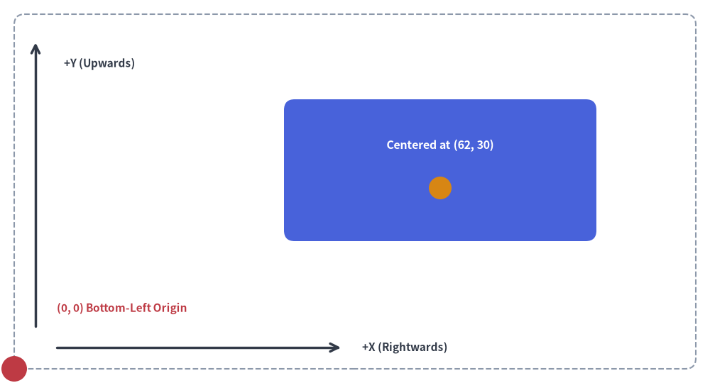
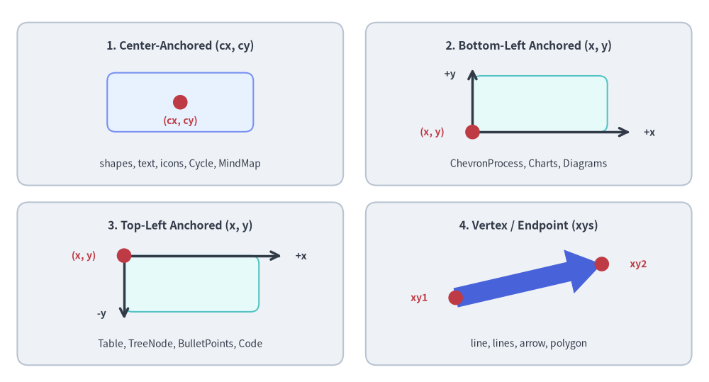
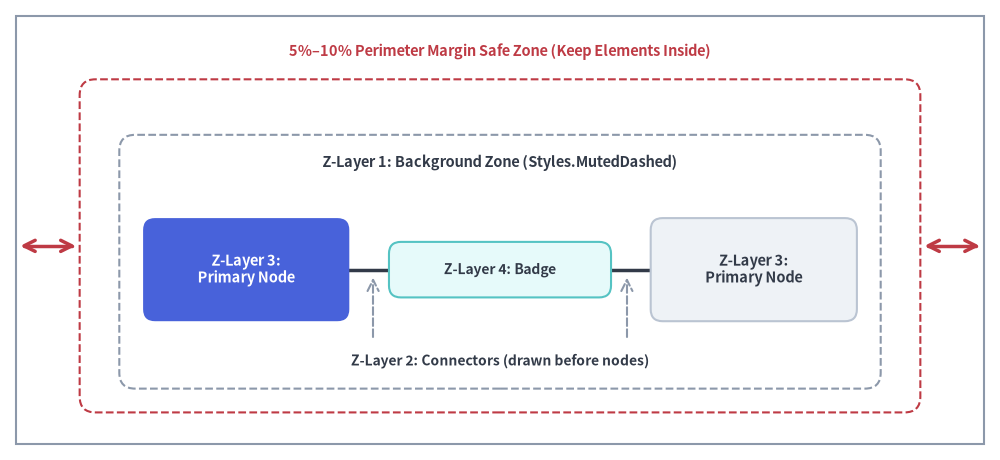
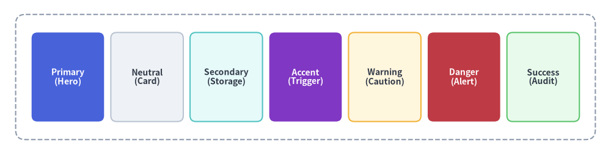

Core Visual Concepts
To create clean, professional illustrations with Drawlib, it is important to understand its underlying Cartesian coordinate space, anchor alignments, and endpoint connectors:

Source Code
from __future__ import annotations
from drawlib.anim import Animation
from drawlib.canvas import save, setup
from drawlib.lines import line
from drawlib.shapes import circle, rectangle
from drawlib.styles import Styles
from drawlib.text import text
setup(width=128, height=74)
anim = Animation(fps=10.0, loop=0)
# Map a true 1:1 square (0..100 x 0..100) coordinate space onto canvas
PLANE_X0, PLANE_Y0 = 16.0, 11.0
PLANE_SIZE = 54.0
SCALE = PLANE_SIZE / 100.0
def pt(vx: float, vy: float) -> tuple[float, float]:
"""Map virtual (0..100, 0..100) coordinates to canvas coordinates."""
return (PLANE_X0 + vx * SCALE, PLANE_Y0 + vy * SCALE)
def draw_plane_and_axes(axis_progress: float = 1.0, show_endpoints: bool = True) -> None:
"""Draw 100x100 canvas frame, subtle grid, origin (0,0), and X/Y axes."""
# Subtle 100x100 canvas sheet
cx, cy = pt(50.0, 50.0)
rectangle(
(cx, cy),
width=PLANE_SIZE,
height=PLANE_SIZE,
style=Styles.Neutral.patch(
shape_fill_color=(250, 252, 255),
shape_line_color=(203, 213, 225),
shape_line_width=1.1,
shape_line_style="dashed",
),
)
# Subtle internal 25/50/75 grid lines
grid_st = Styles.MutedThin.patch(line_color=(232, 238, 246), line_width=0.8)
for g in (25.0, 50.0, 75.0):
line(pt(g, 0.0), pt(g, 100.0), style=grid_st)
line(pt(0.0, g), pt(100.0, g), style=grid_st)
# Growing X and Y axes from (0, 0)
if axis_progress > 0.0:
end_v = 100.0 * axis_progress
line(pt(0.0, 0.0), pt(end_v, 0.0), arrow_head="->", style=Styles.DarkBold.patch(line_width=1.8))
line(pt(0.0, 0.0), pt(0.0, end_v), arrow_head="->", style=Styles.DarkBold.patch(line_width=1.8))
# Origin (0, 0) dot & label
ox, oy = pt(0.0, 0.0)
circle((ox, oy), radius=1.45, style=Styles.DangerFlat)
text((ox - 1.2, oy - 3.6), "(0, 0)", style=Styles.DangerBold.patch(text_size=11.0, halign="center"))
# Endpoint labels (100, 0) and (0, 100)
if show_endpoints:
x_tip = pt(100.0, 0.0)
y_tip = pt(0.0, 100.0)
text((x_tip[0], x_tip[1] - 3.8), "(100, 0)", style=Styles.DarkBold.patch(text_size=10.8, halign="center"))
text((y_tip[0], y_tip[1] + 3.6), "(0, 100)", style=Styles.DarkBold.patch(text_size=10.8, halign="center"))
def draw_info_card(step_badge: str, title: str, lines_info: list[tuple[str, bool]]) -> None:
"""Draw right-side status card explaining the active coordinate concept."""
cx, cy = 102.0, 38.0
w, h = 42.0, 34.0
rectangle(
(cx, cy),
width=w,
height=h,
style=Styles.Neutral.patch(
shape_fill_color=(248, 250, 254),
shape_line_color=(195, 208, 226),
shape_line_width=1.2,
shape_r=2.0,
),
)
rectangle(
(cx, cy + h / 2.0 - 4.2),
width=w - 5.0,
height=5.2,
style=Styles.PrimaryNeutral.patch(shape_r=1.2, shape_line_width=0),
text=step_badge,
text_style=Styles.PrimaryBold.patch(text_size=10.2),
)
text((cx, cy + 5.8), title, style=Styles.DarkBold.patch(text_size=11.5))
start_y = cy + 0.2
for idx, (txt, is_accent) in enumerate(lines_info):
st = (
Styles.PrimaryBold.patch(text_size=10.5)
if is_accent
else Styles.Dark.patch(text_size=10.2)
)
text((cx, start_y - idx * 4.4), txt, style=st)
def draw_circle_alignment_scene(halign: str, valign: str, *, show_ghost_center: bool = False) -> None:
"""Draw circle anchored at (50, 50) with specified halign and valign."""
draw_plane_and_axes(axis_progress=1.0, show_endpoints=True)
c50 = pt(50.0, 50.0)
rad = 20.0 * SCALE
is_shifted = (halign, valign) != ("center", "center")
if show_ghost_center:
circle(
c50,
radius=rad,
style=Styles.MutedDashed.patch(
shape_fill_color=(0, 0, 0, 0),
shape_line_color=(190, 200, 215),
shape_line_width=1.0,
),
)
# Subtle bounding box on shifted states so corner-to-(50, 50) anchor is crystal clear
if is_shifted:
rectangle(
c50,
width=rad * 2.0,
height=rad * 2.0,
style=Styles.PrimaryDashed.patch(
shape_fill_color=(0, 0, 0, 0),
shape_line_color=(135, 162, 228),
shape_line_width=1.0,
halign=halign,
valign=valign,
),
)
# Shifted or centered circle using Drawlib's native halign / valign
circle(
c50,
radius=rad,
style=Styles.PrimaryNeutral.patch(
shape_fill_color=(59, 102, 212, 0.22),
shape_line_color=(59, 102, 212),
shape_line_width=1.8,
halign=halign,
valign=valign,
),
)
# Fixed (50, 50) anchor pin drawn on top so shift relative to (50, 50) is unmistakable
circle(c50, radius=1.45, style=Styles.DangerFlat)
label_y = c50[1] - 3.6 if valign != "top" else c50[1] + 3.6
text((c50[0], label_y), "(50, 50)", style=Styles.DangerBold.patch(text_size=10.5))
draw_info_card(
"2 / 3 Anchor & Align",
"circle((50, 50), ...)",
[
(f'halign = "{halign}"', is_shifted),
(f'valign = "{valign}"', is_shifted),
("Default: center" if not is_shifted else "Shifted around (50, 50)", False),
],
)
def draw_line_ab_scene(line_progress: float) -> None:
"""Draw point-to-point connector from A to B after clearing the circle."""
import math
draw_plane_and_axes(axis_progress=1.0, show_endpoints=True)
ax, ay = pt(25.0, 25.0)
bx, by = pt(75.0, 75.0)
dot_r = 1.55
dx, dy = bx - ax, by - ay
dist = math.hypot(dx, dy)
ux, uy = dx / dist, dy / dist
if line_progress > 0.0:
start_pt = (ax + ux * (dot_r + 0.2), ay + uy * (dot_r + 0.2))
end_full = (bx - ux * (dot_r + 0.3), by - uy * (dot_r + 0.3))
cur_pt = (
start_pt[0] + (end_full[0] - start_pt[0]) * line_progress,
start_pt[1] + (end_full[1] - start_pt[1]) * line_progress,
)
line(
start_pt,
cur_pt,
arrow_head="->" if line_progress >= 0.99 else "",
style=Styles.PrimaryBold.patch(line_width=2.2),
)
circle((ax, ay), radius=dot_r, style=Styles.DarkFlat)
text((ax + 2.2, ay - 3.4), "A (25, 25)", style=Styles.DarkBold.patch(text_size=10.5, halign="left"))
circle((bx, by), radius=dot_r, style=Styles.PrimaryFlat)
text((bx - 2.2, by + 3.4), "B (75, 75)", style=Styles.PrimaryBold.patch(text_size=10.5, halign="right"))
draw_info_card(
"3 / 3 Point-to-Point",
"line(A, B)",
[
("A = (25, 25)", False),
("B = (75, 75)", False),
('arrow_head = "->"', line_progress >= 0.99),
],
)
# -------------------------------------------------------------------------
# Act 1: Origin (0, 0) -> Extend X & Y axes -> Show (100, 0) & (0, 100)
# -------------------------------------------------------------------------
with anim.frame(duration=1.50):
draw_plane_and_axes(axis_progress=0.0, show_endpoints=False)
draw_info_card(
"1 / 3 Cartesian Axes",
"Bottom-Left Origin",
[("Origin = (0, 0)", True), ("", False), ("", False)],
)
with anim.frame(duration=0.90):
draw_plane_and_axes(axis_progress=0.55, show_endpoints=False)
draw_info_card(
"1 / 3 Cartesian Axes",
"Extending +X & +Y",
[("Origin = (0, 0)", False), ("+X Right / +Y Up", True), ("", False)],
)
with anim.frame(duration=2.70):
draw_plane_and_axes(axis_progress=1.0, show_endpoints=True)
draw_info_card(
"1 / 3 Cartesian Axes",
"setup(100, 100)",
[("Origin = (0, 0)", False), ("X-end = (100, 0)", True), ("Y-end = (0, 100)", True)],
)
# -------------------------------------------------------------------------
# Act 2: Circle at (50, 50) -> Shift halign / valign around (50, 50)
# -------------------------------------------------------------------------
with anim.frame(duration=2.70):
draw_circle_alignment_scene("center", "center", show_ghost_center=False)
with anim.frame(duration=2.70):
draw_circle_alignment_scene("left", "bottom", show_ghost_center=True)
with anim.frame(duration=2.70):
draw_circle_alignment_scene("right", "top", show_ghost_center=True)
# -------------------------------------------------------------------------
# Act 3: Clear circle -> Draw line from A to B
# -------------------------------------------------------------------------
with anim.frame(duration=1.30):
draw_line_ab_scene(0.0)
with anim.frame(duration=0.80):
draw_line_ab_scene(0.55)
with anim.frame(duration=4.40):
draw_line_ab_scene(1.0)
save()
1. The Cartesian Coordinate System
Drawlib uses a standard mathematical Cartesian coordinate system where the origin (0, 0) is fixed at the bottom-left corner of the canvas:
- Origin
(0, 0)is at the Bottom-Left:xincreases horizontally to the right.yincreases vertically upwards. (This differs from traditional computer graphics/HTML canvas where(0, 0)is at the top-left).
The 4 Coordinate Anchor Categories
Across Drawlib's components, coordinates follow four consistent anchoring models depending on the component's natural layout geometry:
- Center-Anchored (
(x, y)= center):
Most closed shapes (rectangle,circle,ellipse,triangle,regularpolygon,star,gear,math_symbol,cylinder,cloud,brace,face,shield,pin,clock, etc.), icons, text,Cycle, andMindMapNode. (On shapes, icons, and text, the anchor is configurable viastyle.halignandstyle.valign). - Bottom-Left Anchored (
(x, y)= bottom-left):
bubblespeech,ChevronProcess,GridLayout,Pyramid,BoxList,GeoMap, allCharts,NodeGroupinArchitectureDiagram, andd.draw(xy=...)onDiagrams(as well as.bottom_left/.local_bottom_leftondrawlib.graphlayouts). - Top-Left Anchored (
(x, y)= top-left):
Table,TreeNode,BulletPoints, andSourceCode(components that grow downward as rows/lines are added). - Vertex / Endpoint Coordinates:
polygon(xys),arrow(xy1, xy2),arrow_polyline(xys),line(xy1, xy2), andlines(xys).

Source Code
from drawlib.canvas import save, setup
from drawlib.lines import line
from drawlib.shapes import arrow, circle, rectangle
from drawlib.styles import Styles
from drawlib.text import text
setup(width=126, height=68)
hdr_ts = Styles.DarkBold.patch(text_size=11.5)
coord_ts = Styles.DangerBold.patch(text_size=10.0)
axis_ts = Styles.DarkBold.patch(text_size=10.0)
sub_ts = Styles.Dark.patch(text_size=10.0)
# Panel 1 (Top-Left): Center-Anchored (cx, cy)
rectangle((32.0, 49.5), width=58.0, height=29.0, style=Styles.Neutral.patch(shape_r=2.0))
text((32.0, 59.8), "1. Center-Anchored (cx, cy)", style=hdr_ts)
rectangle((32.0, 49.8), width=26.0, height=10.5, style=Styles.PrimaryNeutral.patch(shape_r=1.5))
circle((32.0, 49.8), radius=1.3, style=Styles.DangerFlat)
text((32.0, 46.5), "(cx, cy)", style=coord_ts)
text((32.0, 38.8), "shapes, text, icons, Cycle, MindMap", style=sub_ts)
# Panel 2 (Top-Right): Bottom-Left Anchored (x, y)
rectangle((94.0, 49.5), width=58.0, height=29.0, style=Styles.Neutral.patch(shape_r=2.0))
text((94.0, 59.8), "2. Bottom-Left Anchored (x, y)", style=hdr_ts)
rectangle((96.0, 49.5), width=24.0, height=10.0, style=Styles.SecondaryNeutral.patch(shape_r=1.5))
line((84.0, 44.5), (112.0, 44.5), arrow_head="->", style=Styles.DarkBold)
text((115.5, 44.5), "+x", style=axis_ts)
line((84.0, 44.5), (84.0, 55.8), arrow_head="->", style=Styles.DarkBold)
text((80.0, 54.8), "+y", style=axis_ts)
circle((84.0, 44.5), radius=1.3, style=Styles.DangerFlat)
text((76.8, 44.5), "(x, y)", style=coord_ts)
text((94.0, 38.8), "ChevronProcess, Charts, Diagrams", style=sub_ts)
# Panel 3 (Bottom-Left): Top-Left Anchored (x, y)
rectangle((32.0, 17.5), width=58.0, height=29.0, style=Styles.Neutral.patch(shape_r=2.0))
text((32.0, 27.8), "3. Top-Left Anchored (x, y)", style=hdr_ts)
rectangle((34.0, 17.5), width=24.0, height=10.0, style=Styles.SecondaryNeutral.patch(shape_r=1.5))
line((22.0, 22.5), (50.0, 22.5), arrow_head="->", style=Styles.DarkBold)
text((53.5, 22.5), "+x", style=axis_ts)
line((22.0, 22.5), (22.0, 11.2), arrow_head="->", style=Styles.DarkBold)
text((18.0, 12.2), "-y", style=axis_ts)
circle((22.0, 22.5), radius=1.3, style=Styles.DangerFlat)
text((14.8, 22.5), "(x, y)", style=coord_ts)
text((32.0, 6.8), "Table, TreeNode, BulletPoints, Code", style=sub_ts)
# Panel 4 (Bottom-Right): Vertex / Endpoint (xys)
rectangle((94.0, 17.5), width=58.0, height=29.0, style=Styles.Neutral.patch(shape_r=2.0))
text((94.0, 27.8), "4. Vertex / Endpoint (xys)", style=hdr_ts)
arrow((81.0, 15.0), (107.0, 21.0), tail_width=3.5, head_width=8.0, head_length=6.0, style=Styles.PrimaryFlat)
circle((81.0, 15.0), radius=1.3, style=Styles.DangerFlat)
text((74.5, 15.0), "xy1", style=coord_ts)
circle((107.0, 21.0), radius=1.3, style=Styles.DangerFlat)
text((113.5, 21.0), "xy2", style=coord_ts)
text((94.0, 6.8), "line, lines, arrow, polygon", style=sub_ts)
save()
2. Canvas Sizing & Virtual Units
Canvas dimensions specified in setup(width=..., height=...) represent arbitrary virtual coordinate units, not physical pixels.
Drawlib maps these coordinate units to high-resolution display pixels automatically.
Recommended Canvas Dimensions
Choose dimensions that match the natural aspect ratio of your diagram:
- Wide Schemas (16:9 / Landscape):
width=120,height=50orwidth=140,height=60 - Balanced Cards (4:3):
width=100,height=75 - Square / Symmetrical:
width=100,height=100
3. Perimeter Margins, Z-Order Layering & Geometry Helpers
A common mistake when generating diagrams is placing elements too close to the canvas edges or drawing elements out of z-order:
- Keep 5%–10% Perimeter Margin: Leave breathing room around all four borders. For a canvas with
width=100andheight=60, avoid placing text or shape boundaries belowx=5, abovex=95, belowy=5, or abovey=55. - 4-Layer Painter's Algorithm Z-Order: Drawlib renders elements in the exact order they are called (back-to-front). Follow this 4-layer drawing sequence so lines never cut across node labels and backgrounds never obscure foreground nodes:
- Layer 1 — Background Zones: VPCs, subnets, and boundary containers (e.g.
rectangle(..., style=Styles.MutedDashed)). - Layer 2 — Connectors / Lines: Inter-service arrows and communication links (
line,line_curved,lines). - Layer 3 — Primary Nodes / Shapes: Service cards, databases, icons, and actors (
rectangle,circle,cylinder). - Layer 4 — Callouts / Badges: Floating protocol badges, status indicators, and speech callouts (
bubblespeech,text).
- Layer 1 — Background Zones: VPCs, subnets, and boundary containers (e.g.
- Dynamic Bounding Boxes with
drawlib.math.get_center_and_size(): Instead of manually calculating container centers and dimensions around a group of nodes, pass their coordinate list toget_center_and_size(points)to obtain((center_x, center_y), (width, height))automatically.

Source Code
from drawlib.canvas import save, setup
from drawlib.lines import line
from drawlib.shapes import rectangle
from drawlib.styles import Styles
from drawlib.text import text
setup(width=126, height=58)
# Outer canvas boundary frame & inner 5%-10% Safe Margin Zone
rectangle((63.0, 29.0), width=122.0, height=54.0, style=Styles.MutedOutline)
rectangle((63.0, 27.0), width=106.0, height=42.0, style=Styles.DangerDashed.patch(shape_r=2.0))
text((63.0, 51.5), "5%–10% Perimeter Margin Safe Zone (Keep Elements Inside)", style=Styles.DangerBold.patch(text_size=10.5))
line((2.5, 27.0), (9.5, 27.0), arrow_head="<->", style=Styles.DangerBold)
line((116.5, 27.0), (123.5, 27.0), arrow_head="<->", style=Styles.DangerBold)
# Z-Layer 1: Background Zone
rectangle((63.0, 25.0), width=96.0, height=32.0, style=Styles.MutedDashed.patch(shape_r=2.0))
text((63.0, 37.5), "Z-Layer 1: Background Zone (Styles.MutedDashed)", style=Styles.DarkBold.patch(text_size=10.5))
# Z-Layer 2: Connectors (drawn before or between nodes)
line((31.0, 24.0), (95.0, 24.0), arrow_head="->", style=Styles.DarkBold.patch(line_width=2.5))
text((63.0, 12.5), "Z-Layer 2: Connectors (drawn before nodes)", style=Styles.DarkBold.patch(text_size=10.0))
line((47.0, 15.5), (47.0, 23.0), arrow_head="->", style=Styles.MutedDashed)
line((79.0, 15.5), (79.0, 23.0), arrow_head="->", style=Styles.MutedDashed)
# Z-Layer 3: Primary Nodes
rectangle(
(31.0, 24.0),
width=26.0,
height=13.0,
style=Styles.PrimaryFlat.patch(shape_r=1.5),
text="Z-Layer 3:\nPrimary Node",
text_style=Styles.WhiteBold.patch(text_size=10.5),
)
rectangle(
(95.0, 24.0),
width=26.0,
height=13.0,
style=Styles.Neutral.patch(shape_r=1.5),
text="Z-Layer 3:\nPrimary Node",
text_style=Styles.DarkBold.patch(text_size=10.5),
)
# Z-Layer 4: Badges & Callouts (drawn last on top of connectors)
rectangle(
(63.0, 24.0),
width=28.0,
height=7.0,
style=Styles.SecondaryNeutral.patch(shape_r=1.5),
text="Z-Layer 4: Badge",
text_style=Styles.DarkBold.patch(text_size=10.0),
)
save()
4. The Semantic Design System & Color Discipline
Professional illustrations maintain visual clarity by structuring colors around Drawlib's core semantic roles and following the 50%+ Neutral-Grounded Architecture discipline:
[!IMPORTANT] Avoid Rainbow Chaos (50%+ Neutral-Grounded Architecture): Never color every box with saturated fills (
PrimaryFlat,AccentFlat,SuccessFlat,WarningFlat). Overly colorful diagrams look amateurish and cause visual fatigue.
- Ground 50% or more of nodes in calm neutral or tinted-neutral cards:
Styles.Neutral,Styles.NeutralFlat,Styles.PrimaryNeutral,Styles.SecondaryNeutral.- Reserve saturated hero fills (
Styles.PrimaryFlat,Styles.AccentFlatwithtext_style=Styles.WhiteBold) strictly for 1–2 primary focal points.- Use
Styles.MutedDashedorStyles.Mutedfor boundary containers, VPCs, and clusters.- Use
Styles.DarkBoldorStyles.DarkFlatfor clean, neutral connection lines.

Source Code
from drawlib.canvas import save, setup
from drawlib.shapes import rectangle
from drawlib.styles import Styles
setup(width=126, height=32)
ts_white = Styles.WhiteBold.patch(text_size=10.0)
ts_dark = Styles.DarkBold.patch(text_size=10.0)
# Neutral Foundation / Subnet Boundary (Muted)
rectangle((63.0, 16.0), width=120.0, height=26.0, style=Styles.MutedDashed.patch(shape_r=2.0))
# 7 Semantic Roles
roles = [
(13.8, "Primary\n(Hero)", Styles.PrimaryFlat, ts_white),
(30.2, "Neutral\n(Card)", Styles.Neutral, ts_dark),
(46.6, "Secondary\n(Storage)", Styles.SecondaryNeutral, ts_dark),
(63.0, "Accent\n(Trigger)", Styles.AccentFlat, ts_white),
(79.4, "Warning\n(Caution)", Styles.WarningNeutral, ts_dark),
(95.8, "Danger\n(Alert)", Styles.DangerFlat, ts_white),
(112.2, "Success\n(Audit)", Styles.SuccessNeutral, ts_dark),
]
for cx, label, box_style, txt_style in roles:
rectangle((cx, 16.0), width=15.0, height=18.5, style=box_style.patch(shape_r=1.2), text=label, text_style=txt_style)
save()
- Primary Anchor (
Styles.PrimaryFlat): Central workflow spine, core microservices, and primary subject matter (reserved for 1–2 hero elements). - Neutral Grounding (
Styles.Neutral,Styles.PrimaryNeutral,Styles.SecondaryNeutral): General worker nodes, supporting services, and calm card surfaces that provide breathing room for the eye. - Functional Semantics (
Styles.Accent,Styles.Warning,Styles.Danger,Styles.Success): Auxiliary events, warnings, alerts, and verified deliverables used purposefully where their functional meaning applies. - Muted Structural Base (
Styles.Muted): Neutral containers, group boundaries, subnets, and grouping boxes (Styles.MutedFlat,Styles.MutedDashed).
5. Development Overlay: Coordinate Grids
While prototyping, enable the coordinate grid to verify alignments:
# In code:
setup(width=100, height=60, grid=True)
Or via CLI flag without changing code:
$ uv run drawlib show my_diagram.py -g -o test_grid.png